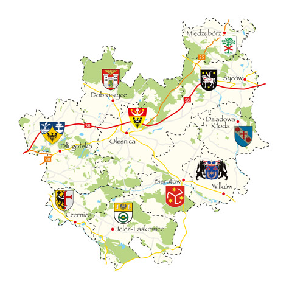

Lokalna Grupa Działania "Dobra Widawa"
Firma Marzena Krajzel Dom pod Wierzbą powstała dzięki wsparciu Lokalnej Grupy Działania Dobra Widawa, w ramach poddziałania 19.2 „Wsparcie na wdrażanie operacji w ramach strategii rozwoju lokalnego objętego Programem Rozwoju Obszarów Wiejskich na lata 2014-2020 kierowanego przez społeczność”
Lokalna Grupa Działania Dobra Widawa – wspieramy mieszkańców naszego obszaru, działaczy społecznych, przedsiębiorców - w realizacji inicjatyw na rzecz rozwoju lokalnego obszarów wiejskich - projektów kulturalnych, społecznych, inwestycyjnych.
Lokalna Grupa Działania Dobra Widawa jest Stowarzyszeniem działającym na zasadzie partnerstwa składającego się z przedstawicieli trzech sektorów: publicznego, społecznego, gospodarczego oraz mieszkańców. Zrzesza 10 sąsiadujących ze sobą gmin: Bierutów, Dobroszyce, Dziadowa Kłoda, Międzybórz, Oleśnica, Syców, Czernica, Długołęka, Jelcz-Laskowice, Wilków, należących do 4 powiatów – oleśnickiego, wrocławskiego, oławskiego oraz namysłowskiego.